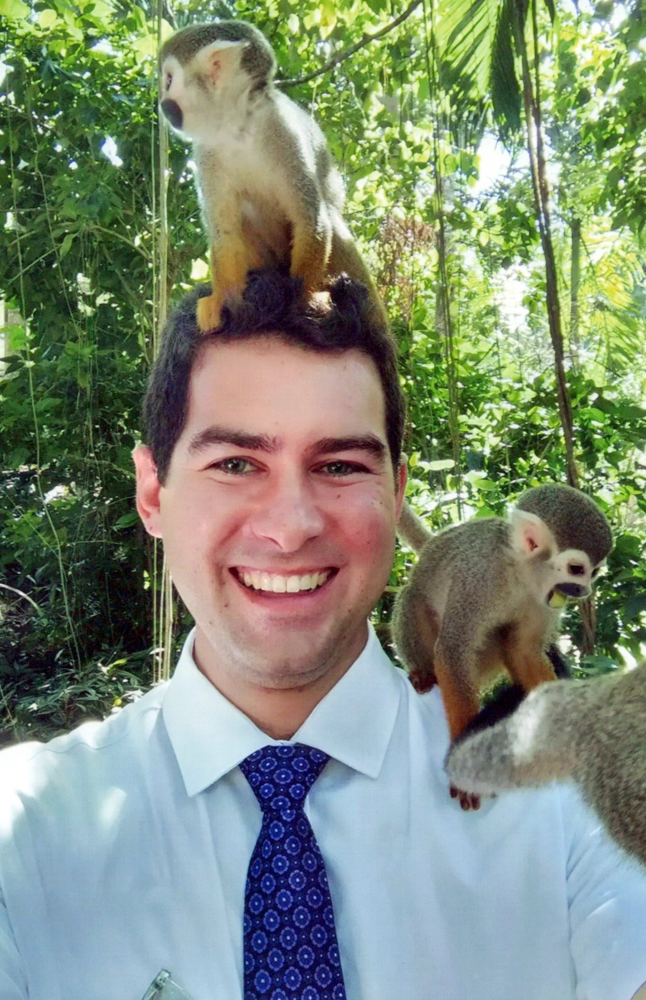

Being a tactician by nature, I have a tendency to assess all possible outcomes in order to make the most concise and effective decision. Having this aspiration, I am drawn to studying strategic management due to the overarching desire to serve and help others make the most out of their efforts. Functioning as a guide, I plan to lead teams and companies to broaden their potential and adapt to a changing world.
Who am I
My name is Timothy Gelatka from Southern California. In December of 2019, I graduated with four business associates degrees, and became the first of my family to graduate from college. At the time I figured this was enough. This mindset changed just before my mission.
Over the last few years, the reality of becoming an entrepreneur became imaginable. I’m excited to learn about how I can apply gospel principles to business. One of my ambitions is to create a nonprofit devoted to growing food in impoverished countries; another is to streamline the vacation and traveling process to include things like language and cultural learning. I am a passionate gardener, and even more passionate about efficiency and making people happy. I hope to become a better leader able to hire, inspire, and utilize employees to make these dreams a reality.
"The dreams of yesterday are the hopes of today and the reality of tomorrow."
- Unknown
See my LinkedIn Page.